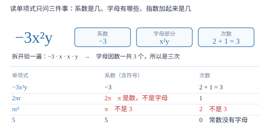

单项式
单项式是「数与字母的积」，读它只问三件事：系数是几、字母有哪些、字母指数加起来是几。π 是数不是字母，这一条决定了最易错的那道题。
| 所属主题 | 整式的加减 |
|---|---|
| 所属模块 | 代数 |
| 课标学段 | 第四学段（7~9 年级） |
| 前置知识 | 代数式与字母表示数 |
| 核心素养 | 抽象能力运算能力 |
教材定位
人民教育出版社《人教版（2024版）义务教育教科书·数学》
七年级上册第4章 整式的加减4.1 整式
对应七上 4.1 整式第 1 课时（单项式）。教材以港珠澳大桥的路程式 92t、72a+120a 引入；本篇把「π 为什么不算字母」写成反证，并把次数解释为「字母因数的个数」。
说明
数与字母的积组成的代数式叫做单项式。单独一个数（如 5、-3.1、π）或单独一个字母（如 m）也是单项式。判据只有一条：整个式子能不能写成「一个数乘上若干字母」的形式。写成这样的，就是单项式；写成加减、或者除数是字母的，就不是。
单项式中的数字因数叫做这个单项式的系数，系数必须带上符号。-3x^2y 的系数是 -3 而不是 3；-a 的系数是 -1 而不是「没有系数」；a 的系数是 1。π 是一个确定的数，不是字母，所以 -2π r 的系数是 -2π，不拆成 -2 与 π 两截。
一个单项式中所有字母的指数的和，叫做这个单项式的次数。3x^2y 的次数是 2+1=3；abc 的次数是 3；单个 a 的次数是 1；非零常数如 5 的次数是 0。需要留意 π r^2：π 不进字母账，只有 r 算字母，所以次数是 2 而不是 3。
使用场景
考试里关于单项式的题集中在三处：给一个式子读系数与次数（选择题、填空题）；判断「哪些是单项式」（把 1/x、\sqrtx、x+1 混在一堆里）；反求单项式，如「写出一个系数为 -2、次数为 3 的单项式」。三类题考的都是同一个读法。
往后的整式乘法与因式分解都要反复回到这两个量：判断同类项要看字母与指数，判断乘积的次数要把两个单项式的次数相加。这里读错一次，后面每一步都带着错。
注意点
π 不是字母。π r^2 的系数是 π、次数是 2；2π r 的系数是 2π、次数是 1。把 π 当字母会让次数凭空多 1，这是本章最高频的判错。
系数要带符号，分数系数要写成假分数：-3x/2 的系数是 -3/2，不是 -3；-a 的系数是 -1，不是 1。
1 和 -1 被省略了，但确实存在：a 是 1\cdot a，-ab 是 -1\cdot ab。答「没有系数」是标准失分点，答「系数是 0」更是把项读没了。
证明

图 1：系数圈数字（含符号、含 π），次数数字母（不含 π）。同一个式子拆开看，两件事各自清楚
证明
结论 1π 不算字母，所以 2π r 的系数是 2π、次数是 1。
系数被定义为「数字因数」，而 π 是一个确定的数：它是圆周长与直径的比，约等于 3.14159，不随任何条件改变，也不能取到不同的值。字母（如 r）的身份恰恰是「可以代表不同数的符号」，正因为它会变，才需要单独统计它的指数。区分标准就是「能不能换一个值」：π 不能，r 能。把 2π r 拆成「数 × 字母」的形式，数那一部分是 2π，字母只剩 r，指数和为 1。
关键一步依据是系数与次数的定义都建立在「数」与「字母」的区分上，而区分标准是它是否为可变的量。
结论 2非零常数（如 5）的次数是 0，而单项式 a 的次数是 1。
次数定义为所有字母指数之和。5 可以写成 5\cdot x^0（x≠q 0 时 x^0=1），乘积里没有出现任何字母，字母指数之和是空和，按约定取 0。而 a=a^1，含一个指数为 1 的字母，和为 1。这样定义还有一个好处：5 乘 a 得 5a，次数 0+1=1，与直接读 5a 的结论一致。若把常数次数定为 1，5a 就会变成 2 次，与事实冲突。
关键一步依据是次数等于字母因数的个数；常数里一个字母因数都没有，所以是 0 个。
结论 3次数取的是「指数的和」，因为乘法里字母是一个一个乘进去的。
把 3x^2y 完全展开成 3\cdot x\cdot x\cdot y，数一数字母因数一共 3 个：两个 x、一个 y。每乘进一个字母，次数就加 1，所以 x^2\cdot y 的次数是 2+1。若改成取「最高指数」，x^2y 与 x^2 就同为 2 次，但两者在同一个式子里相乘时贡献的字母因数个数明显不同（前者 3 个、后者 2），次数就失去了区分能力。指数的本义是「这个字母乘了几次」，把各字母的次数加起来，正好是「一共乘了几个字母」。
关键一步依据是乘方就是相同因数的连乘，指数的本义是乘法次数；求和才对应「一共乘了几次」。
动手实验
把 3x^2y 逐字抄在纸上，改写成 3\cdot x\cdot x\cdot y，在两个 x 和一个 y 上各打一个勾，数勾的个数得 3，与 2+1 一致。再用同样办法数 -2π r：先把 π 换成 3.14，式子变成 -6.28\cdot r，只剩一个 r 能打勾，次数是 1；如果硬把 π 当字母打勾，就会数出 2，而 -6.28r 明明只有一个字母。最后数 abc 与 a^2b，都得到 3——顺带发现「次数相同并不代表是同一个单项式」。
解题思路
判断一个式子是不是单项式，只做一次翻译：能不能写成「一个数乘上若干字母（可带指数）」？能则是。x+1 是两项相加，不是；1/x 是 1 除以 x，除数是字母，不是；\sqrtx 是开方运算，也不是；5、π、a 单独一个数或字母，都是。
读系数与次数分两步，两步的对象不同，绝不能混着做。第一步圈数字：把所有数字因数（含符号、含 π）圈在一起乘出来，得到系数——特别检查有没有漏掉被省略的 1 或 -1。第二步圈字母：把每个字母的指数写出来相加，得到次数——字母没写指数就是 1，没有字母就是 0。
反求单项式（「写出系数为 -2、次数为 3 的单项式」）按次数拆指数：3 次可以拆成 x^3、x^2y、xyz 三种，配上系数 -2 得 -2x^3、-2x^2y、-2xyz，任写一个都对；写成 -2x^2y^2 就错了，那是 4 次。拆完回头加一遍指数，是最快的自查。
按场景的例题
例 1（场景：图形设计） 圆形花坛的周长
一个圆形花坛的半径是 r 米，周长是 2π r 米。写出这个单项式的系数与次数；当 r=3 时求周长（π 取 3.14）。
解：系数是数字因数 2π——π 是常数，与 2 一起构成数字部分；次数是字母 r 的指数 1。当 r=3 时，周长 =2× 3.14× 3=18.84 米。若把 π 当字母，会误判次数为 2，进而把「一次式」当成「二次式」，后面合并同类项时就会与别的项错配。
答：系数 2π，次数 1；周长 18.84 米。
例 2（场景：物理情境） 动能公式
动能公式为 E=1/2mv^2，其中 m 是质量（千克）、v 是速度（米/秒）。把 1/2mv^2 看作关于 m、v 的单项式，系数与次数各是多少？当 m=2、v=3 时动能是多少焦耳？
解：系数是 1/2，次数是 m 的指数 1 加 v 的指数 2，共 3 次。代入得 1/2× 2× 3^2=1/2× 2× 9=9 焦耳。这里的 v^2 的指数按 2 算，不能按 1 算——指数写在右上角，就是它乘了几次的记录。
答：系数 1/2，次数 3；动能 9 焦耳。
例 3（场景：行程与速度） 读三个路程式
一辆汽车以 v 千米/小时匀速行驶 t 小时，路程为 vt 千米。分别说出 vt、-3v、2π v 的系数与次数，并说明为什么 -3v 的系数不是 3。
解：vt 的系数是 1（省略不写）、次数 1+1=2；-3v 的系数是 -3、次数 1；2π v 的系数是 2π、次数 1。-3v 读作「负三倍的 v」，负号是系数的组成部分，不是运算符号；若把系数读成 3，这个单项式的值就由负变正，符号信息整个丢了。
答：vt：系数 1，次数 2；-3v：系数 -3，次数 1；2π v：系数 2π，次数 1。
例 4（场景：销售与利润） 成本加成定价
某商品成本为 c 元，按成本的 15% 加价出售，单件利润是 0.15c 元。写出系数与次数；若成本为 2400 元，单件利润是多少？
解：系数 0.15，次数 1（只有 c 一个字母）。代入得 0.15× 2400=360 元。这里系数是小数，读系数时要把 0.15 整块当作数字因数；如果把它拆成 15 与百分号两部分，代入时容易直接用 15 去乘，结果放大 100 倍。
答：系数 0.15，次数 1；单件利润 360 元。
常用推论
系数为 1 或 -1 时通常省略，但读题必须补回来：a 是 1a，-a 是 -1a，-ab 是 -1ab。
次数相同不代表能合并：3x^2y 与 3xy^2 都是 3 次，但字母指数的分布不同，不是同类项。
次数与系数完全独立：3x^2y 与 -1000x^2y 的次数都是 3，系数却差得很远；改系数不改次数，改指数才改次数。
易错点
错说 π r^2 的次数是 3，理由是「π、r 各算一个字母，r 又平方」。
为什么错π 是常数不是字母，只有 r 进字母账，指数和为 2。
正确π r^2 是二次单项式，系数是 π、次数是 2。
错说 -3x^2y 的系数是 3，认为负号是运算符号。
为什么错系数是数字因数，负号属于这个因数；丢掉负号等于把式子改成它的相反数。
正确系数是 -3，次数是 2+1=3。
错说 a 没有系数、5 没有次数。
为什么错1 与 0 都是被省略的默认值，不是不存在：a=1\cdot a^1，5=5\cdot x^0。
正确a 的系数是 1、次数是 1；5 的系数是 5、次数是 0。
直观理解
单项式像一箱货：系数是「箱子里装多少」，字母部分是箱子上贴的标签，说明装的是什么东西。3x^2y 就是「3 箱，每箱两件 x 加一件 y」。次数是标签上写的总件数 3。π 不是标签，它是「每箱的实际重量」，所以归到「多少」里去，不参与数件数。